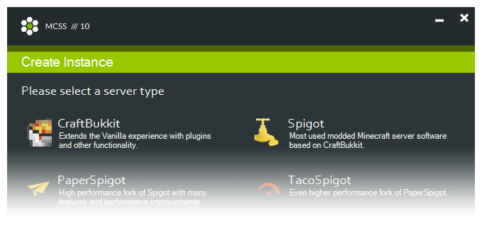
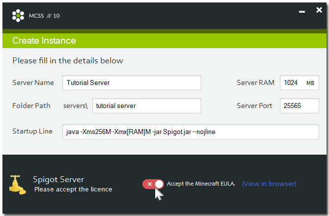
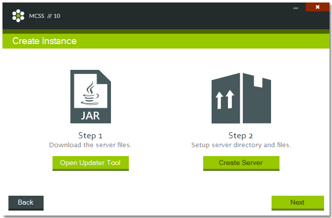
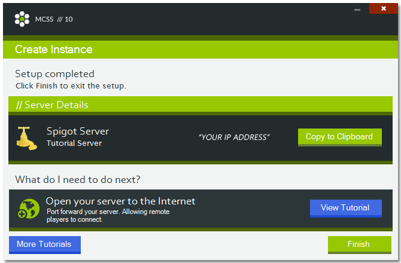

Creating a server
- Choosing a server type
- Details and accepting the Minecraft EULA
- Get the server files with the updater
- Wrapping it up
Choosing a server type
There are many types to choose from. If you are setting up your first server or if these server types are new to you, it's important to know what each one does and what it brings to the table.
Some focus on adding more functionality, others on performance and others bring both.

All of these listed server types support plugins and are all cross compatible. So you are not tied to a specific type. Going further down the list each one is more customizable and adds more features than the previous one.
| Name | Description | Useful links |
|---|---|---|
| CraftBukkit | Extends the Vanilla experience with plugins and other functionality. If you just want a server to play with some friends, without the need to customize every aspect of the gameplay. | Project |
| Spigot | Most used modded Minecraft server software based on CraftBukkit. | Project |
| PaperSpigot | High performance fork of Spigot with many features and performance improvements. | Project |
| TacoSpigot | Even higher performance fork of PaperSpigot. It offering increased performance and experimental features. | Project |
Details and accepting the Minecraft EULA
It's time to fill in all details about your server.
| Setting name | Description |
|---|---|
| Server Name | A name for your server, this is only visible to you. |
| Folder Path | A unique location for your server, stored in the /servers directory. |
| Startup Line | The command used to start the server. It is tempting to change the [RAM] variable but I can only discourage you from doing so. Instead use the appropriate Server Ram Default: java -Xms256M -Xmx[RAM]M -jar {0}.jar --nojline |
| Server Ram | The amount of memory that will be dedicated to your server. if you are just starting out, keep it at its default value and increase when needed. Default: 1024 MB |
| Server Port | This is the port of your computer that wil be used by your Minecraft server to recieve and send data. The default is 25565, if your plan on running more than 1 server at the time, you can simply increment it each time. Default: 25565 |

Accept the Minecraft EULA to continue.
Get the server files with the updater

Click on 'Open Updater Tool'. Since version 10.0.4.4 server files are no longer provided. You will need to use the updater tool to get them.
When that's done, click on 'Create Server', this should only take a few seconds or even less.
Wrapping it up
All done! Wasn't that easy?
